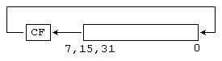
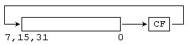

Команды RCL и RCR
Команды RCL и RCR выполняют побитовые сдвиги заданного значения через флаг CF. Команда RCL выполняет сдвиг влево, то есть в сторону старших битов, а команда RCR - сдвиг влево, то есть в сторону младших битов.
Команда RCL
| Синтаксис: | RCL op1,op2 |
| Операнды: | op1 - r/m8, r/m16, r/m32 op2 - i8, CL |
| Назначение: | Циклический сдвиг влево через флаг переноса |
| Процессор: | 8086+ |
| Флаги: | Флаг OF изменяется только в случае сдвига на 1 бит - он устанавливается, если изменилось значение старшего бита, и сбрасывается, если старший бит не изменился. Для сдвигов на несколько бит, флаг OF неопределен. Флаг CF содержит значение бита, который был в него помещен сдвигом. Остальные флаги не изменяются. |
| Комментарий: | Команда RCL выполняет побитовый сдвиг операнда влево через флаг переноса.
Старший бит операнда помещается во флаг CF, все биты операнда сдвигаются влево на место
старших битов и предыдущее содержимое флага CF помещается в бит 0 операнда. Величина сдвига
определяется вторым операндом  Использование в качестве второго операнда непосредственных значений больших 1 стало возможным только начиная с 80186 процессора. Начиная с 80286 процессоров у второго операнда учитываются только пять младших бит (значения от 0 до 31). Процессоры ниже 80286 учитывали все биты операнда. |
| Ограничения: | Нет |
| Примеры: |
mov cl,4 rcl ax,cl jc l1 |
Команда RCR
| Синтаксис: | RCR op1,op2 |
| Операнды: | op1 - r/m8, r/m16, r/m32 op2 - i8, CL |
| Назначение: | Циклический сдвиг вправо через флаг переноса |
| Процессор: | 8086+ |
| Флаги: | Флаг OF изменяется только в случае сдвига на 1 бит - он устанавливается, если изменилось значение старшего бита, и сбрасывается, если старший бит не изменился. Для сдвигов на несколько бит, флаг OF неопределен. Флаг CF содержит значение бита, который был в него помещен сдвигом. Остальные флаги не изменяются. |
| Комментарий: | Команда RCR выполняет побитовый сдвиг операнда вправо через флаг переноса.
Младший бит операнда помещается во флаг CF, все биты операнда сдвигаются вправо на место
младших битов и предыдущее содержимое флага CF помещается в старший бит операнда. Величина
сдвига определяется вторым операндом  Использование в качестве второго операнда непосредственных значений больших 1 стало возможным только начиная с 80186 процессора. Начиная с 80286 процессоров у второго операнда учитываются только пять младших бит (значения от 0 до 31). Процессоры ниже 80286 учитывали все биты операнда. |
| Ограничения: | Нет |
| Примеры: |
mov cl,12 rcr ax,cl jc l1 |